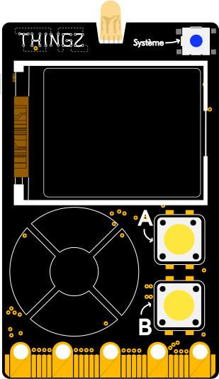
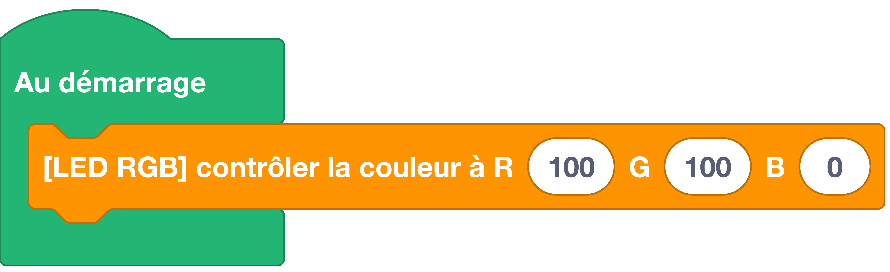

TODO : refaire cette fiche lorsque le simulateur est ok
Permet de régler l'intensité de la LED intégrée à la carte Galaxia, de 0 à 100 pour chacune des couleurs (rouge, vert, bleu).
Branchement

Bloc

Code
Exemple : Allumage d'une LED
Documentation MicroPython
Dans l'exemple ci-dessus, nous utilisons la classe Pin qui permet de manipuler les broches E/S (Entrée/Sortie) de la carte électronique. Pour en savoir plus sur cette classe, nous vous invitons à lire la documentation MicroPython.